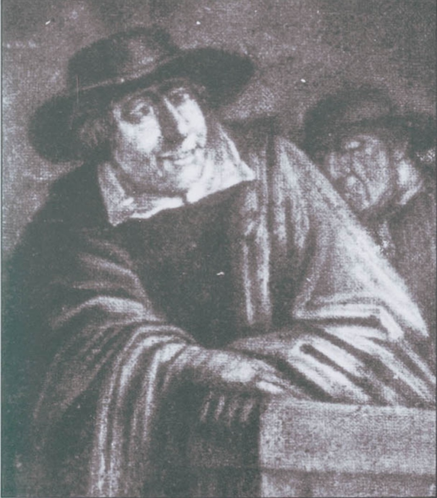
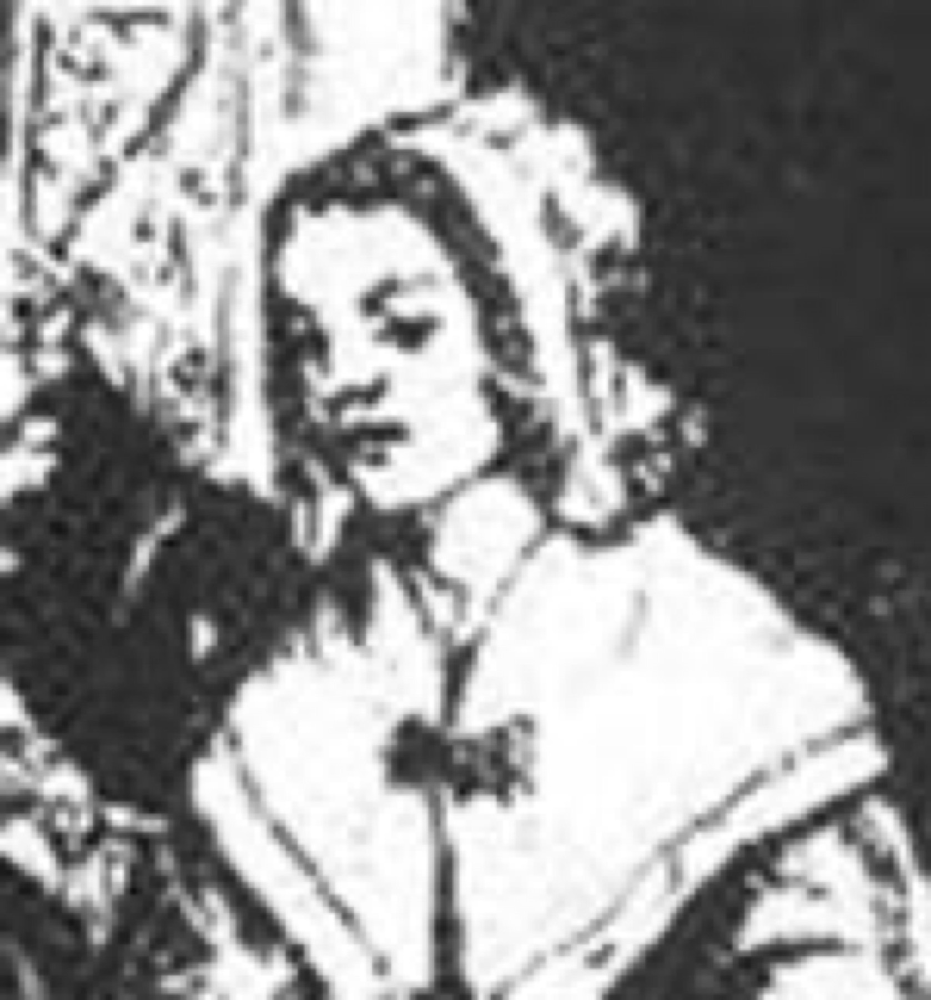
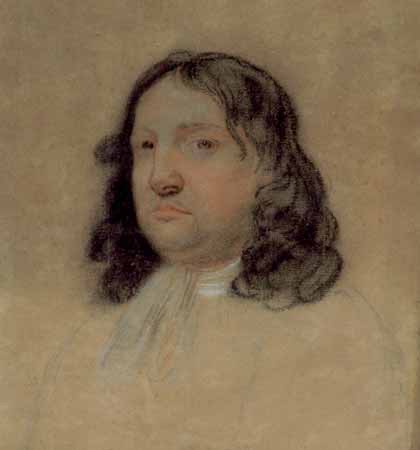
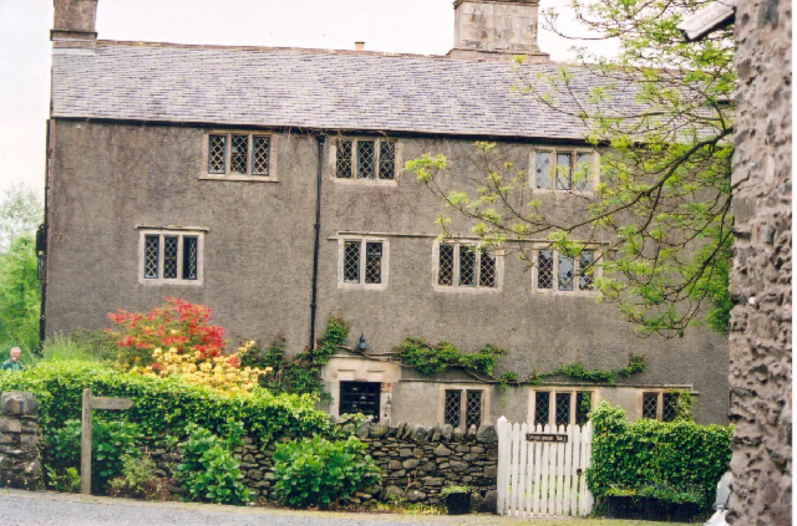
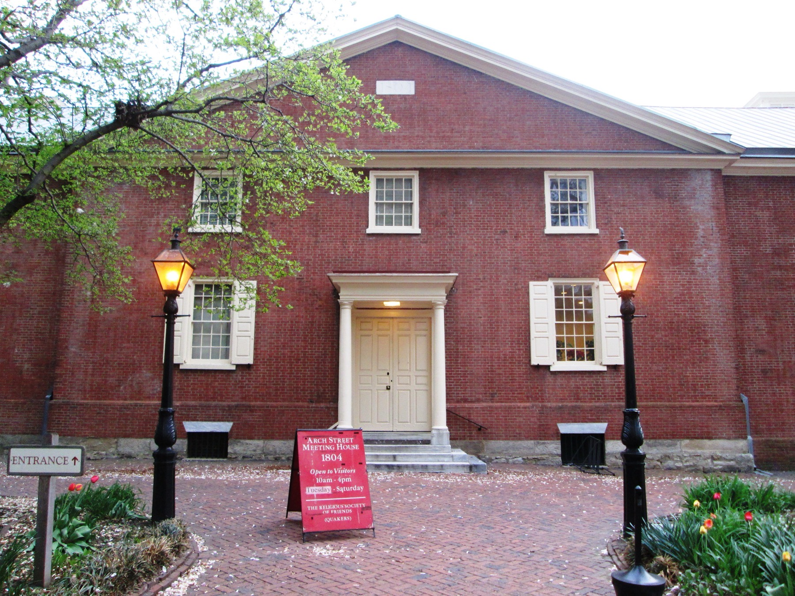

视觉史料（VISUAL SOURCES）
图像与史料说明
人物肖像、聚会所（Meeting House）、历史地点与建筑照片的来源、授权与史料层级。
来源 · 授权 · 不确定性（PROVENANCE · LICENSE · UNCERTAINTY）
每一张历史图片，都应该知道自己从哪里来
本站把图片分成三类：历史图像、现代地点/建筑照片、解释性图解。历史图像会尽量说明它是否同时代、是否属于后世艺术家印象；现代照片则保留作者与授权。图像帮助理解，但不替代原典。

乔治·福克斯（George Fox）（被认为是同时代肖像）
维基共享资源将此图标为“推定肖像”（Supposed portrait），并注明 1677 年。本站保留这个限定语，不把归属不确定性抹掉。
图像作者／来源：Egbert van Heemskerk（归属） · 授权：公有领域（Public domain） · 查看原始来源 ↗
玛格丽特·费尔（Margaret Fell）
罗伯特·斯彭斯（Robert Spence）的蚀刻细节，属于后世艺术形象，不是十七世纪写生肖像。
图像作者／来源：罗伯特·斯彭斯（Robert Spence） · 授权：公有领域（Public domain） · 查看原始来源 ↗
威廉·佩恩（William Penn）
弗朗西斯·普莱斯（Francis Place） 1695 年粉笔肖像；来源页称其为已知唯一一幅在佩恩（Penn）生前写生的肖像。
图像作者／来源：弗朗西斯·普莱斯（Francis Place） · 授权：公有领域（Public domain） · 查看原始来源 ↗
约翰·伍尔曼（John Woolman）
来源页认为原作很可能与伍尔曼（Woolman）的同时代友人罗伯特·史密斯三世（Robert Smith III）有关，同时指出图像存在后来的记忆性元素。
图像作者／来源：可能为罗伯特·史密斯三世（Probably Robert Smith III） · 授权：在美国属公有领域（Public domain in U.S.） · 查看原始来源 ↗
斯沃斯莫庄园（Swarthmoor Hall）
坎布里亚（Cumbria）的斯沃斯莫庄园（Swarthmoor Hall），与玛格丽特·费尔（Margaret Fell）及早期会友网络密切相关。
图像作者／来源：Marion Dutcher · 授权：CC BY-SA 2.0 · 查看原始来源 ↗
贵格会聚会所室内
现代建筑照片，用来观察聚会所（Meeting House）的座位、隔断与朴素空间语言；不作为十七世纪室内的直接复原。
图像作者／来源：Pi3.124 · 授权：CC BY-SA 4.0 · 查看原始来源 ↗
拱街贵格会聚会所（Arch Street Friends Meeting House）
费城重要贵格会建筑。建于 1803–05 年，后来扩建。
图像作者／来源：Beyond My Ken · 授权：CC BY-SA 4.0 · 查看原始来源 ↗
自由贵格会聚会所室内
美国国家公园管理局的建筑记录图像；作为美国联邦政府雇员职务作品，在美国属于公有领域。
图像作者／来源：美国国家公园管理局（U.S. National Park Service） · 授权：美国公有领域（Public domain, U.S.） · 查看原始来源 ↗使用原则
如果未来加入人工智能（AI）场景复原，本站会明确标记为“编辑性复原／非历史照片”，不让生成图像冒充档案材料。历史研究页优先使用可追溯来源的真实史料与建筑照片。